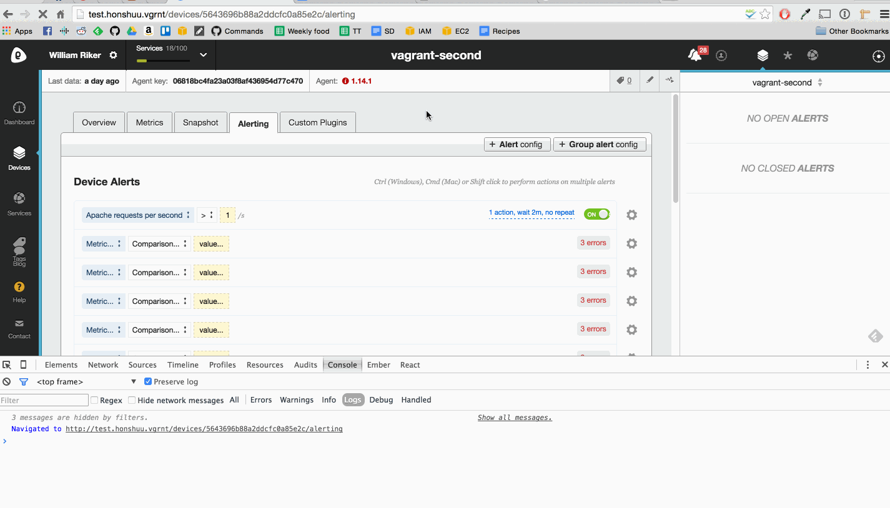

"Webpack is a module bundler. Webpack takes modules with dependencies and generates static assets representing those modules."
var path = require('path')
var webpack = require('webpack')
module.exports = {
// The base directory for resolving the entry option
context: __dirname + "/app/coffeescript",
// The entry point for the bundle
entry: "./bootstrap.coffee",
// Various output options, to give us a single bundle.js file with everything resolved and concatenated
output: {
path: __dirname + '/app/webpack',
filename: "bundle.js",
publicPath: '/app/webpack/',
pathinfo: true
},
// Where to resolve our loaders
resolveLoader: {
modulesDirectories: ['node_modules']
},
resolve: {
// Directories that contain our modules
root: [path.join(__dirname, "./app/coffeescript"), path.join(__dirname, "./app/templates")],
// Extensions used to resolve modules
extensions: ['', '.js', '.csx', '.csx.coffee', '.coffee'],
// Replace modules with other modules or paths (like the 'paths' option with Require.js)
alias: {
some_lib: path.join(__dirname, "some/location")
}
},
// Source map option. Eval provides a little less info, but is faster
devtool: 'eval',
// Our loader configuration
module: {
loaders: [
{ test: /\.csx.coffee$/, loaders: ['coffee', 'cjsx']},
{ test: /^(?=.*coffee)(?!.*csx).*/, loader: 'coffee' }, // Contains .coffee but NOT .csx
{ test: /\.html$/, loader: "mustache"},
{ test: /\.json$/, loader: "json"}
]
},
// Include mocks for when node.js specific modules may be required
node: {
fs: 'empty',
net: 'empty',
tls: 'empty'
}
};
Some lines left out for brevity
entry: "./bootstrap.coffee",
output: {
path: __dirname + '/app/webpack',
filename: "bundle.js"
}
Run with webpack --watch
"Loaders allow you to preprocess files as you require() or “load” them"
module: {
loaders: [
{ test: /\.csx.coffee$/, loaders: ['coffee', 'cjsx']},
{ test: /^(?=.*coffee)(?!.*csx).*/, loader: 'coffee' },
{ test: /\.html$/, loader: "mustache"},
{ test: /\.json$/, loader: "json"}
]
}
Loaders can be resolved from anywhere, node_modules is conveniently used by default
They can be chained, making them very powerful
Add in a style loader
{ test: /\.css$/, loader: 'style!css'}
And require() CSS
CSS = require('./site.css')
By default a
Can be utilised in production by making use of the ExtractTextPlugin
{ test: /\.css$/, loader: ExtractTextPlugin.extract("style-loader", "css-loader")}
plugins: [new ExtractTextPlugin("app/assets/css/site.css")]

First of all output was updated. This makes use of webpack-dev-server.
output: {
path: __dirname + '/app/webpack',
filename: "bundle.js",
publicPath: "http://localhost:8080/app/webpack"
}
And an extra loader to process CJSX files
{ test: /\.csx.coffee$/, loaders: ['react-hot', 'coffee', 'cjsx']}
Run with: webpack-dev-server --inline --hot
Webpack includes numerous plugins to handle many of the common production requirements
plugins: [
new webpack.optimize.UglifyJsPlugin({
mangle: {
except: ['$super', '$', 'exports']
},
output: {
comments: false
}
}),
new webpack.optimize.DedupePlugin(),
new webpack.optimize.OccurenceOrderPlugin(false)
]
{{ /_(somethingToWorkOn), but we weren't calling .value() in all casesWebpack has offered us a lot of productivity improvements, and an improved workflow, with a much simpler approach than the Grunt based system we were using